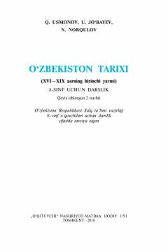

OT8-sinf uchun O'zbekiston tarixi (XVI—XIX asrning birinchi yarmi) fanidan darslik.
Mazkur darslik 8-sinf o'quvchilari uchun mo'ljallangan bo'lib, XVI asrdan XIX asrning o'rtalarigacha bo'lgan Vatanimiz tarixini yoritadi. Kitobda Movarounnahrdagi shayboniylar hukmronligi, uch xonlikka bo'linib ketish davri va ijtimoiy-siyosiy jarayonlar haqida batafsil ma'lumot berilgan.